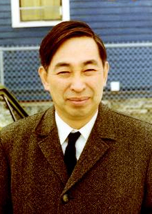
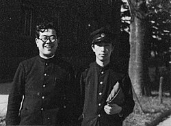
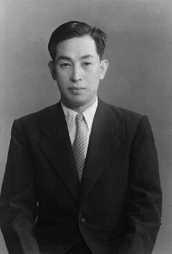
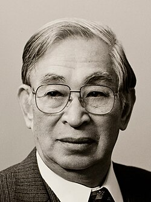

Kiyosi Itô | |
|---|---|
 Itô at Cornell University, 1970 | |
| Born | September 7, 1915 |
| Died | November 10, 2008 (aged 93) |
| Alma mater | University of Tokyo |
| Known for | Itô calculus |
| Awards | Asahi Prize (1977) Wolf Prize (1987) Kyoto Prize (1998) Gauss Prize (2006) |
| Scientific career | |
| Fields | Mathematics |
| Institutions | University of Kyoto Cornell University |
| Shokichi Iyanaga | |
Doctoral students | Shinzo Watanabe |
Kiyosi Itô (伊藤 清, Itō Kiyoshi; Japanese pronunciation: [itoː kiꜜjoɕi], 7 September 1915 – 10 November 2008) was a Japanese mathematician who made fundamental contributions to probability theory, in particular, the theory of stochastic processes. He invented the concept of stochastic integral and stochastic differential equation, and is known as the founder of so-called Itô calculus. He also pioneered the connections between stochastic calculus and differential geometry, known as stochastic differential geometry. He was invited for the International Congress of Mathematicians in Stockholm in 1962.[1] So much were Itô's results useful to financial mathematics that he was sometimes called "the most famous Japanese in Wall Street".[2]
Itô was a member of the faculty at University of Kyoto for most of his career and eventually became the director of their Research Institute for Mathematical Sciences. But he also spent multi-year stints at several foreign institutions, the longest of which took place at Cornell University.

Itô pioneered the theory of stochastic integration and stochastic differential equations, now known as Itô calculus. Its basic concept is the Itô integral, and among the most important results is a change of variable formula known as Itô's lemma (also known as the Itô formula). Itô also made contributions to the study of diffusion processes on manifolds, known as stochastic differential geometry.
Itô calculus is a method used in the mathematical study of random events and is applied in various fields, and is perhaps best known for its use in mathematical finance. In particular, the Itô's lemma's best known application is in the derivation of the Black–Scholes equation for option values.[2]
Itô's methods are also used in other fields, including biology and physics.[2] His results have been applied to population models, white noise, chemical reactions, and quantum physics, in addition to uses in various mathematical subjects such as differential geometry, partial differential equations, complex analysis, and harmonic analysis and potential theory.[3]
Fellow mathematician Daniel W. Stroock noted that "People all over realized that what Ito had done explained things that were unexplainable before."[4] Economist Robert C. Merton stated that Itô's work had provided him "a very useful tool" in his own prize-winning work.[4]
Although the standard Hepburn romanization of his name is Kiyoshi Itō, he used the spelling Kiyosi Itô (Kunrei-shiki romanization). The alternative spellings Itoh and Ito are also sometimes seen in the Western world.
Itô was married with three daughters.[4]
Itô was born on 7 September 1915 in a farming area located west of Nagoya, Japan,[4] that being the town of Hokusei-cho in Mie Prefecture.[5] He excelled in his studies as a youth.[4] Admitted to the Imperial University of Tokyo, he studied mathematics and became interested in the underdeveloped field of probability theory, graduating from there in 1938,[5] with his degree in mathematics being granted by the university's Faculty of Science.[6]
From 1939 to 1943 he worked as a Statistical Officer with the Statistics Bureau of the Cabinet Secretariat,[6] There he was given rein by management to continue his research.[5] His breakthrough paper, "On Stochastic Processes", appeared in 1942.[7] In 1943, he was appointed an assistant professor at Nagoya Imperial University,[5] where he benefited from discussions with the mathematicians Kōsaku Yosida and Shizuo Kakutani.[8] From investigations done during this period he published a series of articles in which he defined the stochastic integral and laid the foundations of the Itō calculus. Meanwhile, he received his Doctor of Science degree from the Imperial University of Tokyo in 1945.[6]
These works were published despite the difficulties of life in Japan during World War II, including problems accessing libraries and especially the loss of contact with Western mathematicians and the lack of awareness of results from them.[3][5] For instance, the only other Japanese mathematician actively interested in Itô's work during the war, Gisiro Maruyama, read a mimeographed copy of a paper while in a military camp.[8] Scholarly activity during the Occupation of Japan had its difficulties; in one case, paper shortages were such that a lengthy Itô article could not be published in a Japanese journal and he had to arrange for an American journal to publish it instead.[8] Ito later referred to his time at Nagoya as having been during "the dark age of World War II and its aftermath."[8]

After this period he continued to develop his ideas on stochastic analysis with many important papers on the topic. In 1952, he became a professor at the University of Kyoto.[2] His most well-known text, Probability Theory, appeared in 1953.[7] Itô remained affiliated with Kyoto until his retirement in 1979. [5] However, beginning in the 1950s, Itô spent long periods of time away from Japan.[4] He was at the Institute for Advanced Study from 1954 to 1956 while on a Fulbright fellowship;[6] while there he worked closely with William Feller and Henry McKean who were at nearby Princeton University.[8] He was a professor at Stanford University from 1961 to 1964 and a professor at Aarhus University from 1966 to 1969.[6]
Then in 1969 Itô arrived at Cornell University, where he was a professor of mathematics for six years until 1975.[7] This was his longest stint outside Japan.[6] Among the courses he taught at Cornell was one in Higher Calculus.[9]
Itô wrote not only in Japanese but also in Chinese, German, French and English.[4] However, his ability to converse in foreign languages was a different matter, and by his own admission his accent made him largely incomprehensible to Americans.[4]
When Itô left Cornell and returned to the University of Kyoto, he served as director of their Research Institute for Mathematical Sciences.[2] After his retirement, he became professor emeritus at Kyoto University.[2] He also had a post-retirement position as a professor at the private Gakushuin University for several years,[6] a common practice among higher-ranking Japanese academics.[5]

Itô was recipient of the Wolf Prize and the Kyoto Prize.[4] He was a member of the Japan Academy,[6] and also a foreign member of the Académie des sciences in France and the National Academy of Sciences in the United States. [4]
In his later years, Itô struggled with poor health.[5] Itô was awarded the inaugural Gauss Prize in 2006 by the International Mathematical Union for his lifetime achievements.[2] As he due to his health was unable to travel to Madrid, his youngest daughter, Junko Ito, received the Gauss Prize from King Juan Carlos I on his behalf.[10] Later, IMU President Sir John Macleod Ball personally presented the medal to Itô at a special ceremony held in Kyoto.[11] In October 2008, Itô was honored with Japan's Order of Culture, and an awards ceremony for the Order of Culture was held at the Imperial Palace.[12]
Itô died on November 10, 2008, in Kyoto, Japan, at age 93, of respiratory failure.[2]
{kind=link}
{kind=link}
{kind=link}
{kind=link}
{kind=link}
{kind=link}